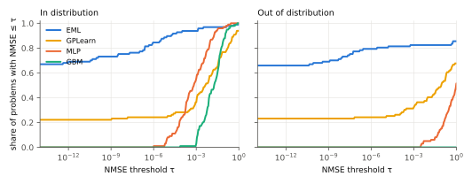
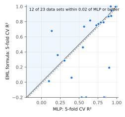
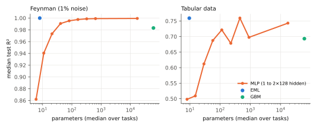

Benchmarking EML based Neural Networks
Odrzywołek (2026) showed that the single binary operator eml(x, y) = ex − ln y, together with the constant 1, generates every elementary function. We ask whether that operator can serve as the only primitive of a trainable, interpretable regression model. EML networks are layered graphs of EML nodes with affine arguments. They are trained by gradient descent, then pruned and snapped to exact exponents. Training needs four ingredients: least-squares solution of the output node's argument in log space, successive halving over restarts, an annealed pull of exponents towards multiples of ½, and Levenberg–Marquardt verification of each pruned or snapped structure.
On the 99 Feynman equations, EML networks recover the exact law for 82% of the held-out problems without trigonometric functions (65% of all problems, against 26% for genetic programming). In distribution they match an MLP: R² > 0.999 on 92% of problems against 55%. Out of distribution they keep R² > 0.99 on 81% of problems, against 5% for the MLP and 0% for gradient boosting. The learned formulas are cheap to run: a median 147× faster than a 2×128 MLP, and an MLP needs a median 10× more parameters to match them on the Feynman problems. Training, however, is a median 184× slower. We also report where the method fails: trigonometric laws, sign-changing products, exponential blow-ups on small noisy data, and data sets without a compact law. Every claim was tested against thresholds fixed before the results. We release emlkit, a scikit-learn estimator plus a compiler that turns any elementary expression into a pure EML tree.
1Introduction
Symbolic regression looks for a formula, not just a predictor. A formula can be read, checked against theory, and trusted outside the range of the data. Most practical systems search over expression trees built from a hand-picked operator set (+, −, ×, ÷, exp, log, sin, …) with genetic programming. Odrzywołek's result offers a different starting point. A single operator, eml(x, y) = ex − ln y, is complete for elementary functions in the way NAND is complete for Boolean logic. A model built from one differentiable primitive can be trained end to end by gradient descent, and every trained model is still a formula.
Pure EML trees are deep, though. Our compiler needs 23 leaves for x·y and 264 for sin x, and gradients through nested exp/ln are badly conditioned. This paper makes the idea practical and tests it against concrete, pre-declared claims (Table 1). We contribute:
- EML networks: EML nodes with affine arguments and typed units, so that products, powers, radicals and exponentials of monomials need one to three nodes instead of dozens (§2).
- A training recipe that turns near-misses into exact formulas: log-space variable projection, successive halving, annealed quantisation, Levenberg–Marquardt verification of structural edits, and an Occam curriculum with BIC selection (§3).
- An evaluation on 99 Feynman equations (with out-of-distribution tests), 15 real physics data sets and 34 tabular data sets. It covers accuracy, explainability, comparison with neural networks, compute, and ablations, with a scorecard of 18 pre-declared claims (§5).
- emlkit, an open-source scikit-learn estimator and a pure-EML compiler, verifier and shortest-tree search.
2EML networks
An EML network is a layered directed acyclic graph. Its input features are \(z_0 = [x,\ \ln|x|]\); the fixed log-features are themselves EML nodes, since \(\ln x = 1 - \mathrm{eml}(0, x)\). Every unit sees all features computed before it through affine maps \(a = W_a z + b_a\) and \(c = W_c z + b_c\), and is one of three types:
\[ E:\ \mathrm{eml}(a, 1) = e^{a}, \qquad L:\ 1 - \mathrm{eml}(0, c) = \ln|c|, \qquad M:\ \mathrm{eml}(a, c) = e^{a} - \ln|c|. \]E and L are the full operator with one argument fixed to the constant 1, or to 0 = ln 1. Fixing an argument removes a redundant degree of freedom. Because ln|x| is an input feature, a monomial \(C\prod_j x_j^{p_j}\) is a single E unit, \(\exp(\sum_j p_j \ln x_j + \ln C)\). The output is either an affine read-out of the last layer, or itself an E node \(y = s\,\exp(w^\top z + b)\) with a fixed sign \(s\). In the second case the network models \(\ln|y|\) as a linear function of its features, so products of factors become sums (Figure 1). Pruned weights are exactly zero and snapped weights are exact rationals, so a trained network is a closed-form expression that SymPy simplifies directly.
The table below lists the shallowest architecture that represents each family of laws exactly. A star marks a log-space output node.
| Family | Example (Feynman) | Architecture |
|---|---|---|
| power law ⋅ exp(linear) | q₁q₂/(4πεr²) | * (no hidden unit) |
| ⋅ exp(monomial) | n₀ e−mgx/kT | E1* |
| ⋅ |affine|p | σ/(ε(1+χ)) | L1* |
| sum of monomials | Gm₁m₂(1/r₂ − 1/r₁) | E2, E3 |
| ⋅ (1 ± monomial)p | m₀/√(1 − v²/c²) | E1-L1* |
| ⋅ (Σ monomials)p | √(x² + y² + z²) | E3-L1* |
| ⋅ (emonomial − 1)p | ħω/(eħω/kT − 1) | E1-E1-L1* |
| ⋅ (Σ (difference)²)p | Gm₁m₂/Σ(x₂−x₁)² | L3-E3-L1* |
3Training
All restarts of an architecture are trained in one batched tensor computation. Each parameter carries a pruning mask and a snapping mask.
- Variable projection. The read-out is never trained by gradient descent. At every step it is solved by ridge least squares, on y for linear outputs and on ln|y| for log-space outputs, with snapped entries held fixed. Gradients only shape the EML features (Golub & Pereyra, 1973). For a log-space output this also solves every exponent attached to the input logs.
- Structured initialisation and successive halving. E units start from sparse integer exponents. In half the restarts, units fed by earlier units start as exp(±u) or ln|1 ± u|. Training starts with 4× the target number of restarts and keeps the better half twice.
- Annealed quantisation. In the second half of dense training a penalty \(\rho(t)\sum (w - \tfrac12\mathrm{round}(2w))^2\) pulls argument weights towards multiples of ½.
- Prune, snap, verify. Weights below a magnitude threshold, and read-out terms that contribute less than a fraction of std(y), are removed. Weights near a multiple of ½ are frozen there. After each edit the free parameters are refit with Adam, then with Levenberg–Marquardt, and a restart is rolled back if its validation error rose by more than 10%. Levenberg–Marquardt is what makes an exact structure look exact: started at the true solution of II.13.23, Adam fine-tuning drifts to NMSE ≈ 10−7, while LM returns to 10−19. Restarts are independent, so perturbing parameter slot k in every restart at once yields column k of every Jacobian in one forward-mode pass.
- Occam curriculum. Eleven architectures, from the plain power law
*to a wideE4-L2-E2with skip read-out, are tried in order of complexity. Log-space stages are used only when y has a constant sign. The search stops early when a candidate fits the validation data to NMSE < 10−12. The final model minimises BIC = n ln(NMSE + 10−14) + k ln n over all candidates.
4Experimental setup
Feynman. All 99 equations of the AI Feynman database (Udrescu & Tegmark, 2020), with formulas and variable ranges from PMLB. For each problem we draw 1,000 training points from the original box, 2,000 test points from the same box (ID), and 2,000 points with every variable in [hi, 2·hi − lo] (OOD, pure extrapolation). Label noise is 0 or 1% of std(y); test sets are noiseless. Recovery is the SRBench criterion: after rounding constants to three decimals, model − truth or model / truth simplifies to a constant. Eight problems were used to develop the method and are reported separately as the dev set.
Real data. Fifteen physics data sets of measured or simulated laws, from PMLB's first principles collection (Cranmer, 2023) and Nikuradse's pipe-flow measurements. Thirty-four general tabular sets: five UCI classics (yacht, airfoil, concrete, energy, auto-MPG) and every small real-world PMLB regression set with ≤ 12 features and ≤ 5,000 rows, excluding synthetic generators. Metric: pooled out-of-fold R² from 5-fold CV (leave-one-out for n < 20).
Baselines (default settings, no test-set tuning): Ridge regression; an MLP with two hidden layers of 128 ReLU units, standardised inputs and target, and early stopping; histogram gradient boosting; random forest; GPLearn genetic programming (population 2,000, 30 generations). EML uses the library defaults (24 restarts per stage, 1,000-step budget per stage). Every run uses one CPU core on Modal with identical package versions.
Compute. On one split per problem (Feynman with 1% noise; tabular with a 75/25 split) we compare EML with MLPs of nine sizes and with gradient boosting in parameters, inference latency and training time (§5.4).
5Results
Table 1 states each claim, the evidence and the verdict, computed mechanically from the thresholds declared in CLAIMS.md before the full results existed.
Table 1. Claims scorecard.
| # | Claim | Evidence | Verdict |
|---|---|---|---|
| C1 | EML recovers exact laws | 82% of held-out non-trig problems | Supported |
| C2 | at least as good as GP symbolic regression | EML 65% vs GPLearn 26% | Supported |
| C3 | matches an MLP in distribution | R²>0.999 on 92% (EML) vs 55% (MLP) | Supported |
| C4 | extrapolates far better than MLP / GBM | OOD R²>0.99 on 81% (EML) vs 5% (MLP), 0% (GBM) | Supported |
| C5 | survives 1% label noise | recovery 34% at 1% vs 65% noiseless | Supported |
| C6 | models are readable | median size 14 (Feynman), 25 (real data) SymPy nodes | Supported |
| C7 | best model on some real data sets | 15 data sets: bode, kepler, leavitt, planck, rydberg, schechter, tully_fisher, 192_vineyard, … | Supported |
| C8 | accurate while explainable (physics data) | median gap to best baseline +0.001 R² | Supported |
| C9 | comparable to a NN (tabular data) | within 0.02 of the MLP or better on 53% of data sets | Supported |
| C10 | every training component matters | wide -30 pts; noVP -27 pts; noLM -19 pts; untyped -19 pts; noLogVP -11 pts; noQ -11 pts; noHalving -8 pts; skip -0 pts | Not supported |
| C11 | compiler is exact | max error 1.7e-15 over 17 expressions | Supported |
| C13 | same accuracy with far fewer parameters (Feynman) | matching MLP needs 10× more parameters (median; no MLP matches EML on 21%) | Supported |
| C14 | same accuracy with fewer parameters (tabular) | matching MLP needs 4× more parameters (median; no MLP matches EML on 21%) | Partly |
| C15 | cheaper inference | 2×128 MLP is 147× slower per prediction (median) | Supported |
| C16 | beats a parameter-matched NN | EML ≥ parameter-matched MLP on 95% of tasks | Supported |
| C17 | training cost comparable to an MLP | EML trains 184× slower (median) | Not supported |
| C18 | pruning keeps accuracy | 45% fewer parameters, validation R² change +0.0000 (medians) | Not supported |
| C12 | limitation: trigonometric laws | 0% recovered on trig problems | Supported |
5.1Feynman equations
Table 2. 99 Feynman problems without noise (top) and with 1% label noise (bottom).
| Method | Exact recovery | R²ID > 0.999 | R²OOD > 0.99 | OOD NMSE < 10⁻⁹ | Median size | Median s |
|---|---|---|---|---|---|---|
| EML | 65% | 92% | 81% | 68% | 14 | 58 |
| GPLearn | 26% | 36% | 40% | 23% | 17 | 16 |
| MLP | – | 55% | 5% | 0% | – | 2 |
| GBM | – | 3% | 0% | 0% | – | 1 |
| RF | – | 1% | 0% | 0% | – | 1 |
| Linear | – | 0% | 3% | 0% | – | 0 |
| Method | Exact recovery | R²ID > 0.999 | R²OOD > 0.99 | OOD NMSE < 10⁻⁹ | Median size | Median s |
|---|---|---|---|---|---|---|
| EML | 34% | 94% | 81% | 0% | 17 | 321 |
| GPLearn | 26% | 35% | 40% | 23% | 16 | 19 |
| MLP | – | 54% | 4% | 0% | – | 3 |
| GBM | – | 2% | 0% | 0% | – | 1 |
| RF | – | 1% | 0% | 0% | – | 1 |
| Linear | – | 0% | 3% | 0% | – | 0 |

EML recovers 65% of all problems exactly (66% of the held-out set, 50% of the dev set, and 82% of held-out problems without trigonometric functions). GPLearn recovers 26%. Every method that fits well in distribution looks similar there, but extrapolation separates them. 68% of EML models stay exact (NMSE < 10⁻⁹) far outside the training box, against 0% for the MLP and 0% for gradient boosting. With 1% label noise EML still recovers 34% of the laws, and keeps OOD R² > 0.99 on 81% of problems.
5.2Real data
Table 3. Physics data: 5-fold CV R² (leave-one-out for n < 20); best value per row in green. The last column is the EML formula fit to all data.
| Data set | n | EML | GPLearn | MLP | GBM | RF | Linear | EML formula |
|---|---|---|---|---|---|---|---|---|
| absorption | 14 | -300.181 | -16.949 | 0.974 | 0.711 | 0.885 | 0.625 | 0.3338*Xaxis0**9.673*exp(8.532/(Xaxis0**0.7026*(0.3358*Xaxis0 + 0.2849*log(Xaxis0) + 1.175)**0.6353) + 0.00090 |
| bode | 8 | 0.982 | -175252777639.843 | -551.294 | -0.306 | 0.554 | -19304.546 | 14.35*exp(0.01192*n + 51.09*Abs((0.001437*n + 0.6304)**0.6932*(-0.0002371*n + 0.2231*log(Abs(n)/1000) + 1.295) |
| hubble | 32 | 0.709 | 0.208 | 0.730 | 0.862 | 0.816 | 0.697 | 1.019e+5/D**0.3319 - 1.05e+5/D**0.3266 + 3577.0 |
| ideal_gas | 30 | 0.378 | 0.537 | 0.879 | 0.674 | 0.632 | 0.830 | 2319.0*V**0.1492*exp(-0.06401*V**0.2561*sqrt(n)/T**0.3114 - 36.87*n**0.1635/(sqrt(T)*V**0.225) + 0.0001752*V** |
| kepler | 6 | 1.000 | 0.818 | 0.865 | -0.440 | 0.214 | 0.905 | 359.9*a**1.509*exp(0.001051*a)/(0.5894*a - 0.387*log(a) - 0.4131)**0.00792 |
| leavitt | 26 | 0.951 | 0.933 | 0.924 | 0.645 | 0.896 | 0.915 | 17.21*logP**0.06124*exp(-0.2326*logP) |
| newton | 30 | -13.851 | 0.977 | -10.774 | 0.861 | 0.810 | -0.841 | 8.69*m1**0.02013*m2**0.01861*r**0.2144*exp(-8.161e-13*r**0.9527*Abs((-2.21e-30*m1 + 5.194e-13*r + log(m1**0.87 |
| planck | 100 | 1.000 | -0.013 | 0.460 | 0.785 | 0.812 | 0.203 | -17.02*(-T**1.144*(0.06841*log(T) + 0.1599*log(nu) - 6.946) + 7.51e-14*nu**1.143)**0.8693/(T**0.9992*nu**0.002 |
| rydberg | 50 | 1.000 | 0.987 | 0.999 | 0.997 | 0.993 | 0.967 | -17.56*exp(-0.008643*n_1 + 0.003002*n_2)*Abs(-0.9932*n_1 + 0.9568*n_2 + log(n_1**0.5704/n_2**0.7029) + 0.0968) |
| schechter | 27 | 0.996 | 0.828 | 0.989 | 0.753 | 0.889 | 0.744 | -8.708*L**0.05651*exp(1.049e-10*L) |
| supernovae_zg | 243 | -6.703 | 0.851 | 0.939 | 0.998 | 0.999 | 0.553 | 0.3216*Xaxis0 + 34.34*(3*Xaxis0/200 - 0.2126*log(Abs(Xaxis0)/100) - 0.0004151*Abs(Xaxis0)**(3/2) + 1)**(3/2)*e |
| supernovae_zr | 236 | -2233357029793081088.000 | 0.867 | 0.998 | 0.993 | 0.993 | 0.499 | 0.007226*Xaxis0**2 + 0.005886*Xaxis0 - 6.405*(0.02142*Xaxis0**2 - Xaxis0 + 200*log(Abs(Xaxis0)/100) - 0.004005 |
| tully_fisher | 18 | 0.924 | 0.838 | 0.455 | 0.775 | 0.826 | 0.860 | -8.359*DV**0.1433 |
| nikuradse_1 | 362 | 0.998 | 0.939 | 0.999 | 0.998 | 0.998 | 0.653 | 3.498*(0.9371*r_k**0.4202/log_Re**2.674 + 0.3327*log_Re + log(3.895/(log_Re**0.9146*r_k**0.2953)) + 1.084 - 8. |
| nikuradse_2 | 362 | 0.973 | 0.825 | 0.977 | 0.952 | 0.966 | -0.003 | 0.9904*exp(0.2348*log_v_k_nu)/(1.206*log_v_k_nu - log(Abs(log_v_k_nu)) - 1)**0.325 |
Table 4. 34 general tabular data sets: median 5-fold CV R² and mean rank (1 = best).
| Method | Median R² | Mean rank |
|---|---|---|
| EML | 0.743 | 3.32 |
| GPLearn | 0.637 | 4.50 |
| MLP | 0.774 | 2.94 |
| GBM | 0.717 | 3.82 |
| RF | 0.763 | 3.09 |
| Linear | 0.638 | 3.32 |

5.3Ablations
Table 5. Exact recovery on 37 held-out non-trigonometric Feynman problems (every other one, fixed list) when one component is removed.
| Variant | Recovery | Change |
|---|---|---|
| full method | 81% | – |
| no curriculum (one wide net) | 51% | -30 pts |
| no variable projection | 54% | -27 pts |
| no Levenberg–Marquardt | 62% | -19 pts |
| untyped M units only | 62% | -19 pts |
| no log-space projection (linear output only) | 70% | -11 pts |
| no annealed quantisation | 70% | -11 pts |
| no successive halving | 73% | -8 pts |
| read-out sees all features | 81% | -0 pts |
5.4Compute
For each problem we also fit MLPs with one hidden layer of 1 to 128 units, plus the 2×128 baseline, and measured parameters, single-core NumPy inference time on 100k rows, and training time. EML formulas are tiny and fast to evaluate. The price is paid during training.
Table 6. Medians per task. Params ratio: parameters of the smallest MLP that matches EML's test R² within 0.005, divided by EML's (EML wins outright where no MLP matches). vs. same-size MLP: share of tasks where EML ≥ the smallest MLP with at least as many parameters.
| Tasks | n | EML R² | 2×128 MLP R² | EML params | Params ratio | vs. same-size MLP | Inference speed-up | Training slow-down |
|---|---|---|---|---|---|---|---|---|
| Feynman, 1% noise | 99 | 1.000 | 0.999 | 8 | 10× | 99% | 215× | 156× |
| Tabular | 34 | 0.759 | 0.743 | 10 | 4× | 85% | 82× | 1282× |

5.5The pure EML compiler
emlkit.tree compiles any elementary SymPy expression into a tree over {eml, 1, x} using textbook identities, for example ln x = eml(1, eml(eml(1, x), 1)) and a − b = eml(ln a, eb). It evaluates the tree with the principal complex logarithm and checks it against the source expression. The constructions are correct, not minimal. Exhaustive search confirms the shortest trees for exp and ln, with 2 and 4 leaves. The sizes explain why we train shallow typed networks rather than pure trees: x·y already needs 23 leaves and sin x needs 264. Fractional powers of negative numbers can land on the other branch of the logarithm. We verify on domains where the source expression is real.
Table 7. Pure EML trees produced by the compiler (leaves, depth, distinct nodes when identical subtrees are shared) and maximum relative error at 64 random points.
| Expression | Leaves | Depth | Shared nodes | Max error |
|---|---|---|---|---|
exp(x) | 2 | 1 | 1 | 0e+00 |
log(x) | 4 | 3 | 3 | 2e-16 |
x - y | 6 | 4 | 5 | 4e-16 |
-x | 11 | 8 | 9 | 1e-16 |
x + y | 16 | 10 | 14 | 3e-16 |
x*y | 23 | 12 | 21 | 4e-16 |
x/y | 13 | 8 | 12 | 2e-16 |
x**y | 27 | 16 | 25 | 2e-15 |
sqrt(x) | 54 | 25 | 41 | 3e-16 |
2 | 16 | 10 | 10 | 0e+00 |
pi | 67 | 26 | 32 | 0e+00 |
I | 42 | 20 | 26 | 3e-17 |
sin(x) | 264 | 71 | 94 | 9e-16 |
cos(x) | 220 | 55 | 85 | 9e-16 |
tanh(x) | 77 | 27 | 44 | 5e-16 |
exp(-x**2/2)/sqrt(2*pi) | 328 | 68 | 139 | 2e-16 |
x*y/(4*pi*z**2) | 231 | 52 | 125 | 8e-16 |
6Limitations
- Trigonometric laws. Real-valued EML networks cannot express sin or cos compactly (§5.5). EML recovers 0% of the trigonometric Feynman problems. Complex-valued units, where ln(−1) = iπ, are the natural extension.
- Sign-changing products. Log-space stages need y of constant sign, and ln|·| loses the sign of a factor. A law such as n k T ln(V₂/V₁) is therefore only approximated.
- Training cost. A fit takes seconds when an early curriculum stage is exact and minutes otherwise, typically two orders of magnitude more than an MLP (C17).
- Blow-ups on small noisy data. On a few small tabular sets a learned exp(·) explodes on held-out folds (CV R² < −1). Clipping predictions to the training range would hide this, so we do not.
- A missing stage. A target that is a plain sum of logarithms (the ideal_gas set stores ln P) is not represented by any strict curriculum stage, and EML fails on it.
- Scope. One seed per configuration, default hyper-parameters, and GPLearn as the only GP baseline. Stronger GP systems (PySR, Operon) would make a harder comparison.
7Related work
Gradient-trained symbolic layers go back to product units (Durbin & Rumelhart, 1989) and the Equation Learner (Martius & Lampert, 2016; Sahoo et al., 2018). Kolmogorov–Arnold networks (Liu et al., 2024) learn univariate splines that are symbolified afterwards. Genetic programming dominates practice (Koza, 1992; Cranmer, 2023), and SRBench (La Cava et al., 2021) standardised its evaluation. AI Feynman (Udrescu & Tegmark, 2020) introduced the benchmark used here. EML networks differ in using one operator for every node and in solving the outer formula exactly by log-space variable projection.
8Conclusion
A single operator is enough to build a trainable model whose fitted parameters are a formula. With the right optimisation scaffolding, gradient descent on EML networks recovers many physical laws exactly. Those laws keep their accuracy far outside the training range, where neural networks and tree ensembles fail. On data without a compact law the formulas remain readable, at a measured cost in accuracy. Code, data, raw results and this paper are reproducible with emlkit.
References
- Cranmer, M. (2023). Interpretable machine learning for science with PySR and SymbolicRegression.jl. arXiv:2305.01582.
- Durbin, R. & Rumelhart, D. (1989). Product units: a computationally powerful and biologically plausible extension to backpropagation networks. Neural Computation 1(1).
- Golub, G. & Pereyra, V. (1973). The differentiation of pseudo-inverses and nonlinear least squares problems whose variables separate. SIAM J. Numer. Anal. 10(2).
- Koza, J. (1992). Genetic Programming. MIT Press.
- La Cava, W. et al. (2021). Contemporary symbolic regression methods and their relative performance. NeurIPS Datasets and Benchmarks.
- Liu, Z. et al. (2024). KAN: Kolmogorov–Arnold Networks. arXiv:2404.19756.
- Martius, G. & Lampert, C. (2016). Extrapolation and learning equations. arXiv:1610.02995.
- Nikuradse, J. (1933). Strömungsgesetze in rauhen Rohren. VDI-Forschungsheft 361.
- Odrzywołek, A. (2026). All elementary functions from a single binary operator. arXiv:2603.21852.
- Sahoo, S., Lampert, C. & Martius, G. (2018). Learning equations for extrapolation and control. ICML.
- Udrescu, S.-M. & Tegmark, M. (2020). AI Feynman: a physics-inspired method for symbolic regression. Science Advances 6(16).